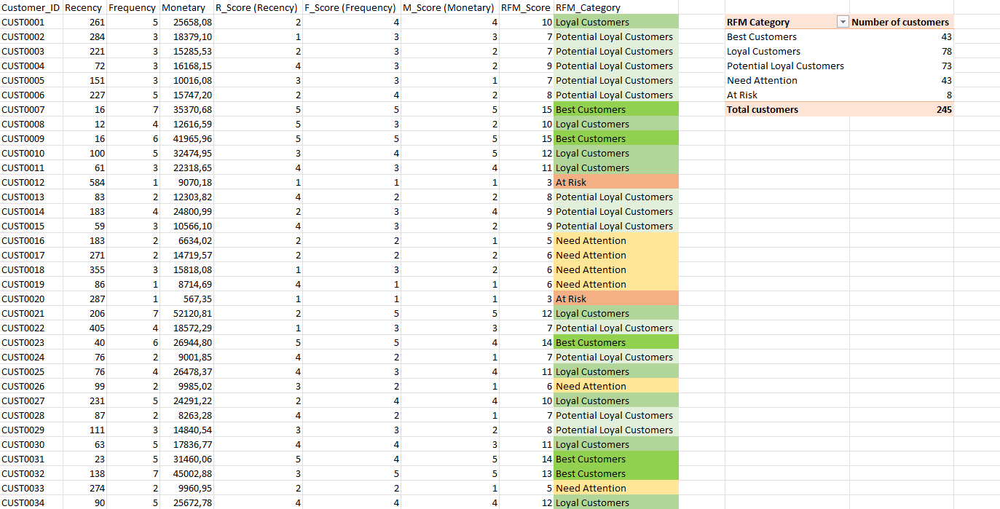
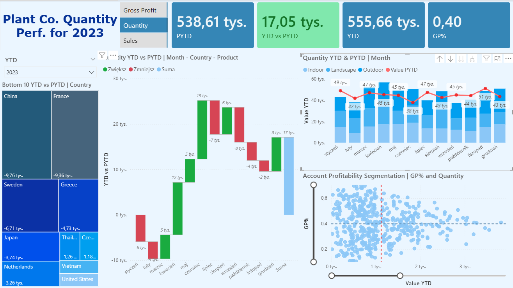
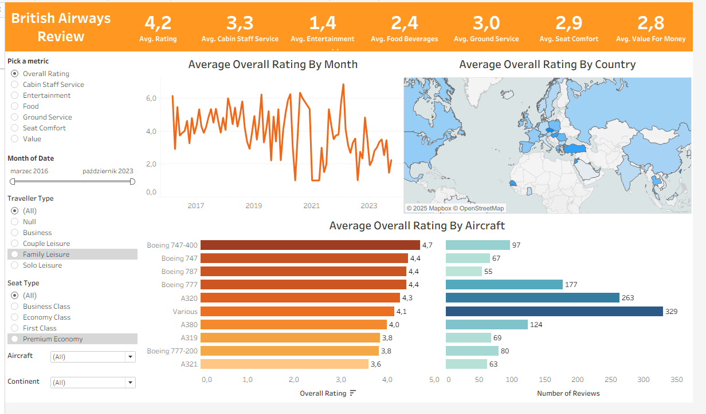

CenoMetr - Apartment Price Prediction
Python - Apartment price prediction built on 45,756 Otodom listings from 20 Polish cities in Q3 and Q4 of 2025 and Q1 of 2026, collected through custom Selenium automation. The pipeline compared Random Forest, Decision Tree, and HistGradientBoosting models with and without district-level features,
using cross-validation and hyperparameter tuning. The selected Random Forest model was deployed as a CLI tool returning instant price and price-per-m² estimates, achieving R² ≈ 0.75, RMSE ≈ 187,000 PLN, and MAPE ≈ 16% on a held-out mainstream-market subset (up to 3M PLN, 400 m²)
CRM-ERP Reconciliation Pipeline
Python - ETL pipeline reconciling 200 synthetic CRM deals against 274 ERP orders pulled from a mock REST API (FastAPI) and a CSV export, with intentionally injected discrepancies. Data validation, currency normalization, and a two-part reconciliation check classified outcomes into matched, amount-mismatch, CRM-only, and ERP-only categories (an 89/17/25/12 split), upserted into MySQL with a full audit trail, retry logic, and daily scheduling.
E-Commerce Warehouse KPI Analysis
MySQL - Warehouse KPI analysis built on a synthetic e-commerce dataset of 45 000 records across 9 relational tables. SQL analysis covered Return Rate, Lead Time, Order Cycle Time, Fill Rate, and Cost per Shipment using joins, CTEs, window functions,
and date functions to identify operational inefficiencies across suppliers, carriers, and product categories including an estimated 10 800 zł in annual savings from shifting shipment volume to the most cost-efficient carrier.

Tile Store Data Analysis
Excel - RFM analysis of a tile store customer base using transaction recency, purchase frequency, and monetary value to score and segment 245 customers.
Pivot tables were used to classify customers into behavioral groups such as Best, Loyal, Potentially Loyal, Need Attention, and At Risk, supporting customer value assessment and retention-focused insights,
with the top 17.6% of customers (Best Customers segment) identified as likely driving a disproportionate share of revenue.

Plant Co. Sales Performance - KPI Dashboard
Power BI - Interactive dashboard tracking sales, quantity, and gross profit for a plant company, with dynamic YTD vs PYTD comparisons across countries, product types, and time.
DAX time intelligence measures, a dynamic metric switcher, and visuals including waterfall charts, treemaps, and scatter plots were used to identify underperforming markets and segment accounts by profitability.

British Airways Review - Dashboard
Tableau - Interactive dashboard analyzing British Airways passenger reviews across time, geography, aircraft type, seat class, and traveler segment.
Rating distributions and trends were explored for overall satisfaction and service components such as cabin staff, food, entertainment, ground service, seat comfort, and value for money using dynamic filters and comparative visualizations.